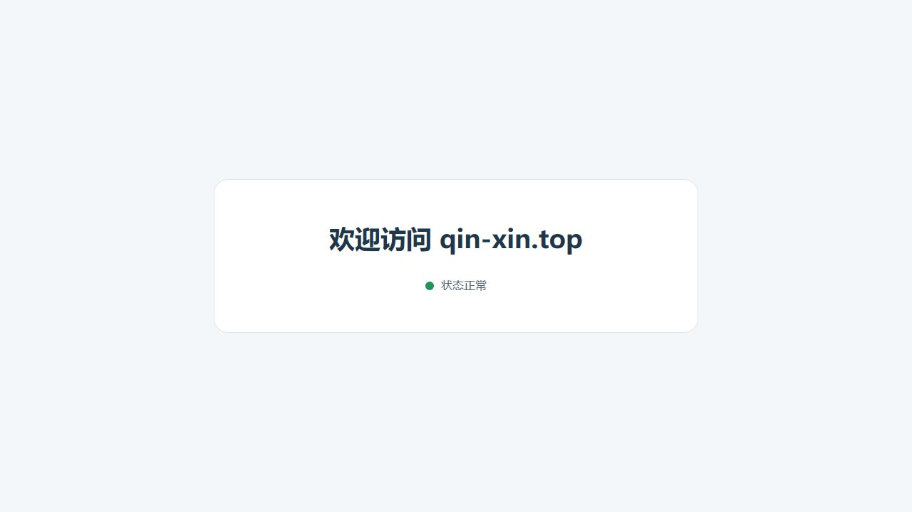

2026-11-13：长稳核对及M7磁盘写满演练
截至北京时间10:26:52，1081次采样、0失败、19轮VPN深检，已运行18小时；今天16:26:48才满24小时。新增真实8MiB tmpfs ENOSPC故障及定向破坏通过，三模块test/vet通过，将门槛扩至32项，完整CI已通过。仅增测试和文档，不升级生产、不重开观察。发布验收差距表 · 故障演练 · 当前长稳判定。
2026-11-13：根盘在线扩容完成
已有40GiB云盘的剩余空间已扩入根分区及ext4，df显示40G、可用17G、使用率55%。快照及私有备份完成后操作；全部容器与启动时间保留，公网和VPN正反向通过。原长稳窗口未变，扩容后1047次采样零失败，尚未满24小时。备份、演练及实测证据。
当前：管理路径确认完成，最终24小时观察运行中
管理入口已切换至https://qin-xin.top/proxy/；所有者完成新入口双因素登录并确认。/futures已通过公网正反向探针及所有者正式登录、账户/引擎数据、退出验收。修订24撤销8001，8007和8001均停止监听。根欢迎页、证书、Trojan与所有容器保留；完整30项CI通过。已以最终路径及实际混合镜像开启独立24小时观察，不拼接此前195次零失败窗口。
此前阶段：长稳HTTP异常修复已上线
六次失败已逐条关联生产网关日志，全部为后台POST返回502，定位为上游空闲连接复用竞争。已为内置后台和目录服务关闭连接复用，不重放POST，不放宽鉴权。真实Caddy负向对照、正向请求、定向破坏及完整29项候选门槛通过。
仅升级control，修订15→16；运行态策略已核验，原账号/设置/规则/VPN保留，网关、VPN和其他项目容器未重建。首次确认连接在热重载交接时中断，自动回退后改为先等待修订提交和运行态收敛，再次部署成功。真实Google HTTPS为204，错误口令被拒。
定位与设计 · 29项门槛 · 部署与正反向证据。旧692次样本、6次失败继续保留；修复后的完整24小时窗口已于北京时间11月12日 11:41:29启动，预计11月13日 11:41:29结束；首轮通过，完整验收尚未完成。新窗口启动证据。
此前阶段：六个独立菜单页已上线
后台已分为总览、反向代理、Trojan VPN、流量记录、证书管理、系统设置。统一侧栏、状态卡、表格与表单，窄屏显示顶部菜单；页面切换保留草稿，退出清除敏感数据。页面方案与截图 · 浏览器正反向记录。
源码3a13f06通过28项候选门槛后，仅升级control。网关、VPN和其他项目进程未重启，账号、设置和规则保留；公网登录页、资源和鉴权边界通过，真实VPN到Google HTTPS为204。完整门槛 · 线上验证。
旧长稳记录692次采样、6次HTTP状态异常，已保留失败证据并结束旧进程基线。本次界面改版不表示这些异常已经解决；正式发布前仍需定位并重开完整24小时观察。
此前阶段：首版公开固定摘要镜像
服务器使用源码2dfb4dc对应的三个公开摘要镜像。干净Ubuntu CI的26项门槛通过，镜像已在空凭据配置下匿名完整拉取；最终默认Compose空卷启动、网页绑定、后台设置、反代/目录、重建保留、持久证书缓存和配置冷还原均通过。CI门槛 · 镜像清单 · 公开镜像默认部署。
实机80/443已交接，欢迎页、跳转和禁止爬虫通过。所有者在后台切换自动证书，Let’s Encrypt正式HTTP-01签发成功。公开镜像重建后，网站、后台8007与Trojan18443均保留同一可信证书，原账号/路由/设置/VPN口令保留；Google HTTPS为204，错误口令被拒，其他项目进程未变。最新部署和重建证据 · 正式证书证据。

恢复与故障保护
SSH恢复、SQLite一致性备份、空卷冷还原及重绑前旧认证阻断通过正反向和六项定向破坏。控制归档不包含流量库，证书/ACME缓存另行私有保留。迁移时发现旧/data临时盘覆盖持久缓存，已修复；新的回归先证明跨重建保存，再故意换成同UID可写临时盘，必须命中指定持久性断言。恢复边界 · 恢复证据 · 缓存回归。
剩余发布门槛
当前仍为候选，尚未合并主分支或创建正式标签。旧长稳六次失败已定位并修复，必须以修复后的实际镜像基线重新通过完整24小时观察。当前窗口与判定标准。公共证书尚未到续期窗口，不能声称已实测公共续期；隔离短期签发与续期已验证。所有者已确认Clash Verge/Clash Mi可访问Google，逐设备UDP与客户端版本尚未单独记录。
阶段历史
统计阶段部署 · 标准入口交接 · 后台设置底座 · 浏览器初始化 · 执行器生命周期。
历史证据中的“尚未”仅描述当时状态；当前状态以本页和最新绑定提交的清单为准。
最终配置24小时观察已启动
北京时间 2026-11-12 16:26:48 启动，预计 2026-11-13 16:26:48 结束。探针绑定实际混合镜像、修订24、管理路径/proxy及期货路径/futures；8007/8001已关闭。Linux正反向判定单测、实际短时冒烟和首轮HTTP/TLS与Trojan正反检查通过。观察仍在运行，尚未完成，不计为24小时通过；原6次失败与195次未满窗口继续保留。
网站访问候选通过，生产保持原窗口
2026-11-13：新增独立网站访问菜单、当前IP白名单分类与7/30天保留、落盘前脱敏、事务续采及满库自动恢复；VPN统计明确命名为VPN流量。源码f406d0e的34项完整CI及三个固定摘要镜像匿名完整拉取均已独立核实，默认Compose与候选包已更新，但生产没有部署该功能。
上线前只读终审快照达到20小时：1201条原始采样、0失败、21轮VPN深检、无审阅发现。观察器源码及三个生产核心容器身份未变，重启计数均0；该结果仍不是24小时通过。原窗口预计2026-11-13 16:26:48（北京时间）完成，之后终审并升级gateway/control，再独立观察新版本。
架构与确认契约 · 验证及上线步骤 · 20小时原始样本审阅 · 34项完整门槛。